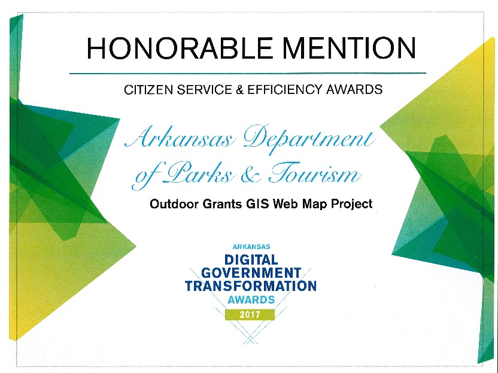

GIS Boundary Viewer

Created a dataset and associated web map which helps track grants, land swaps, deeds, and project boundaries associated with the local Land Water and Conservation Fund (LWCF) grants in Arkansas. I gave a presentation on the dataset and web map to the National Association of State Outdoor Recreation Liaison Officers (NASORLO).
Cartography Automation Suite
Created a set of python add-ins and toolboxes for production cartography at LandVest Inc. The final toolset totaled several thousand lines of code. The tools helped cut down map production times from 30 minutes to less than 10. production costs and map request response times improved as a direct result.
Data-Driven Field Inspections
Converted a paper-based inspection system into a GIS-based system. This vastly improved the efficiency of park inspections. The system includes a mobile app or field data collecting and driving directions. The improved process was presented to the Arkansas Travel and Tourism Commission. It won an honorable mention at the 2017 Arkansas Digital Government Transformation Awards and a personal thanks letter from the Arkansas Governor.
Walkability Web Application
This was a web application that calculates walkability scores and detailed livability statistics for any location based on Open Street Map data. This was a group project that was part of one of the courses that was part of UW Madison's Masters of Science in Cartography and Geographic Information Systems.